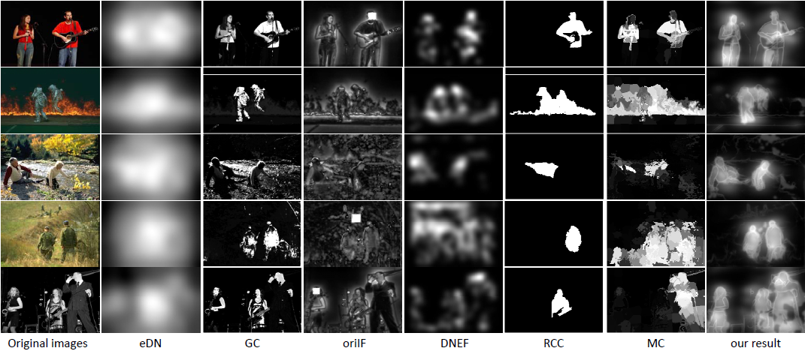
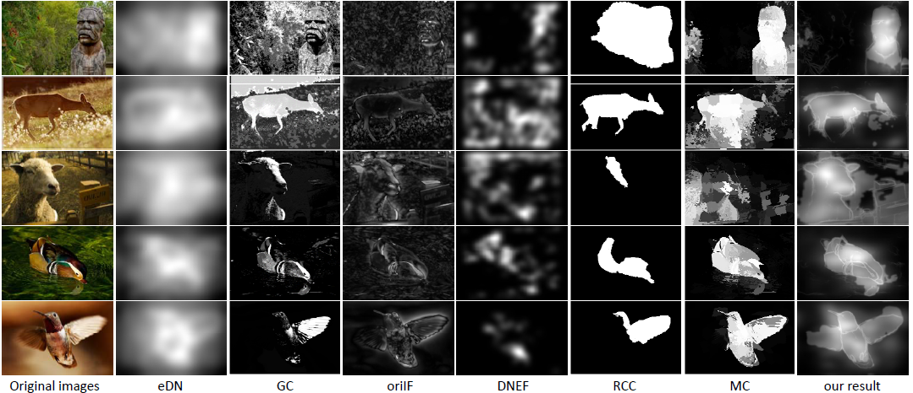
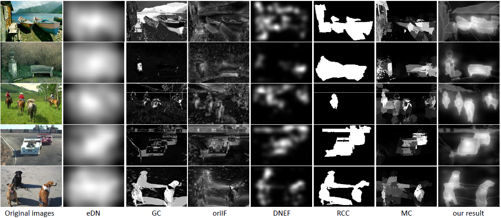
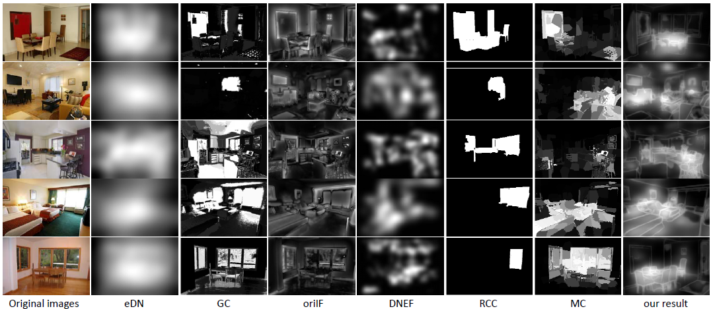
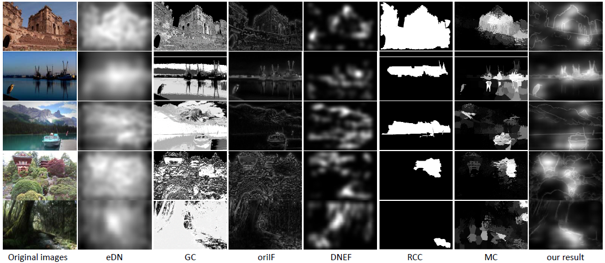

More comparisons with retargeting systems
We feed our importance map to the carrier IF [4] which is selected because of its excellent performance and fast speed. We present more comparisons between our retarget results and 6 other retarget systems. These baseline retarget systems are listed below.
SOAT [5]: SOAT is a method to effectively obtain image thumbnails based on cropping and warping. It models the human perception of thumbnail by visual acuity theory, and gets the Scale and Object Aware Saliency (SOAS) first, and then it uses SOAS to do image thumbnailing.
ISC [7]: Improved Seam Carving (ISC) is the improved version of the famous Seam Carving [1] approach for retargeting. For the improvement, instead of using the dynamic programming approach of seam carving, ISC prefers to graph cuts. A novel energy criterion is also used in ISC to improve the visual quality of the retargeted images.
Multi-Op [8]: Multi-Operator (Multi-Op) approach provides a hybrid method of doing image retargeting. Multiple operators, including seam carving, cropping and scaling, are used alternatively to produce the results. An image similarity measure, named Bi-Directional Warping, is used to find the optimal path in the retargeting space.
Warp [12]: Warp is a warping approach for retargeting. It first analyzes the importance of each region, and then it applies a transformation which shrinks less important regions more than important ones. This method can work both on images and videos.
AAD [6]: Axis-Aligned Deformation (AAD) is a robust image retargeting method. To avoid harmful visual distortions, deformations in AAD are parameterized in 1-dimension. Due to this 1-dimension parameterization, AAD only needs solving a small quadratic program, so AAD method is very efficient.
OSS [11]: Optimized Scale-and-Stretch (OSS) is a warping method which can retarget images into any aspect ratios without harmful visual distortions. OSS works through iteratively computing optimal local scaling factors for each localized region and then updating warped images to match these scaling factors as closely as possible. An efficient formulation for the nonlinear optimization is also developed to do the warping function computations.
Results are given below.

Figure 1. Comparisons between our map and 6 baseline maps. Images are selected from the category of single person.

Figure 2. Comparisons between our map and 6 baseline maps. Images are selected from the category of multiple people.

Figure 3. Comparisons between our map and 6 baseline maps. Images are selected from the category of single object.

Figure 4. Comparisons between our map and 6 baseline maps. Images are selected from the category of multiple objects.

Figure 5. Comparisons between our map and 6 baseline maps. Images are selected from the category of indoor scene.

Figure 6. Comparisons between our map and 6 baseline maps. Images are selected from the category of outdoor scene.